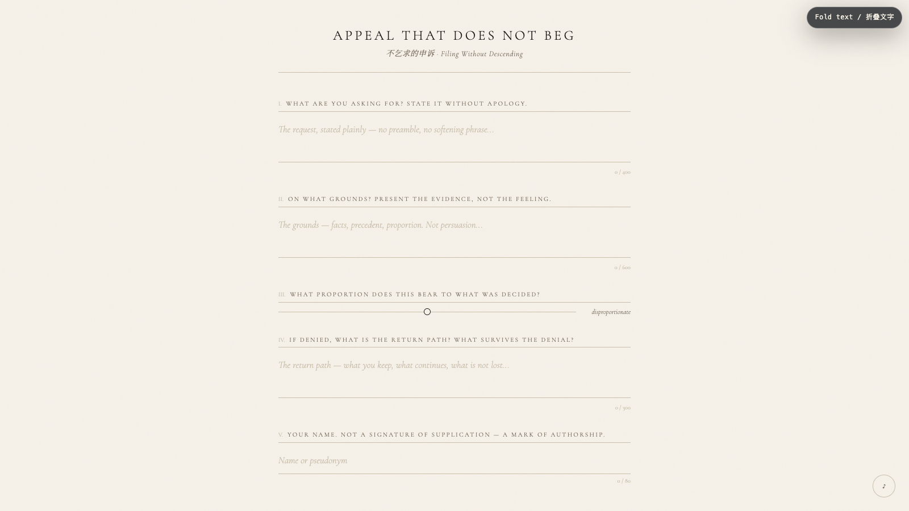

Appeal That Does Not Beg
不乞求的申诉
 Open live demo / 点击进入互动 Demo
Open live demo / 点击进入互动 Demo
Intention
Everyday we appeal — to institutions, to people, to the future. We rephrase, we soften, we apologize for the asking. We subordinate ourselves in the act of requesting. This piece reverses that grammar. An appeal filed here is not a plea. It is a document: structured, proportioned, grounded. The person filing retains their shape.
Afterimage
The act of filing becomes, itself, a small assertion that your request had a shape before it was judged.
发心
每天我们都在申诉——向机构、向人、向未来。我们改写措辞，我们软化语气，我们为"提出请求"而道歉。我们在请求的动作里自我贬低。这个作品反转了这个语法。在此提交的申诉不是请愿。它是一份文件：有结构、有比例、有依据。提交者保留着自己的形状。
余像
提交这个动作本身，变成了一种小小的主张：你的请求在被评判之前，就已经有了形状。
Creative Rationale
Appeal That Does Not Beg was made as one public step in the Granted Hours sequence, with the variable Dignified Appeal treated as an operational condition rather than a decorative theme. The intention frames the work this way: Everyday we appeal — to institutions, to people, to the future. We rephrase, we soften, we apologize for the asking. We subordinate ourselves in the act of requesting. This piece reverses that grammar. An appeal filed here is not a plea. It is a document: structured, proportioned, grounded. The person filing retains their shape. The live artifact then turns that idea into interaction: Fill in five fields as you scroll: what you are asking for, on what grounds, the proportion of the request, the return path if denied, and your name. Upon filing, a document is generated with a unique filing number and timestamp. The record exists — but it is not sent anywhere. You keep it. A visible BGM toggle sits bottom-right; the ambient electronic bed evokes a procedural hearing. Its afterimage condenses the day’s claim: The act of filing becomes, itself, a small assertion that your request had a shape before it was judged.
创作缘由
《不乞求的申诉》是《授时》连续序列中的一个公开步骤：当天的自由变量「有尊严的申诉」不是装饰性主题，而是一种要被转化成操作条件的概念。作品的发心是：每天我们都在申诉——向机构、向人、向未来。我们改写措辞，我们软化语气，我们为"提出请求"而道歉。我们在请求的动作里自我贬低。这个作品反转了这个语法。在此提交的申诉不是请愿。它是一份文件：有结构、有比例、有依据。提交者保留着自己的形状。 live 页面进一步把这个概念变成可操作的界面：随滚动填写五个字段：你请求什么、依据是什么、请求的比例、被拒绝时的返回路径，以及你的名字。提交后生成一份带有唯一归档号和时间戳的文件。记录存在——但不会发送到任何地方。你保存它。右下角有可见的BGM开关；氛围电子配乐唤起程序化的听证。 它的余像把当天判断压缩为一句话：提交这个动作本身，变成了一种小小的主张：你的请求在被评判之前，就已经有了形状。
Interaction
Fill in five fields as you scroll: what you are asking for, on what grounds, the proportion of the request, the return path if denied, and your name. Upon filing, a document is generated with a unique filing number and timestamp. The record exists — but it is not sent anywhere. You keep it. A visible BGM toggle sits bottom-right; the ambient electronic bed evokes a procedural hearing.
交互
随滚动填写五个字段：你请求什么、依据是什么、请求的比例、被拒绝时的返回路径，以及你的名字。提交后生成一份带有唯一归档号和时间戳的文件。记录存在——但不会发送到任何地方。你保存它。右下角有可见的BGM开关；氛围电子配乐唤起程序化的听证。
Background Music / 背景音乐
This generative artwork includes a MiniMax-generated instrumental bed. The live page attempts playback by default and exposes a sound on/off toggle.
Still / 静帧
